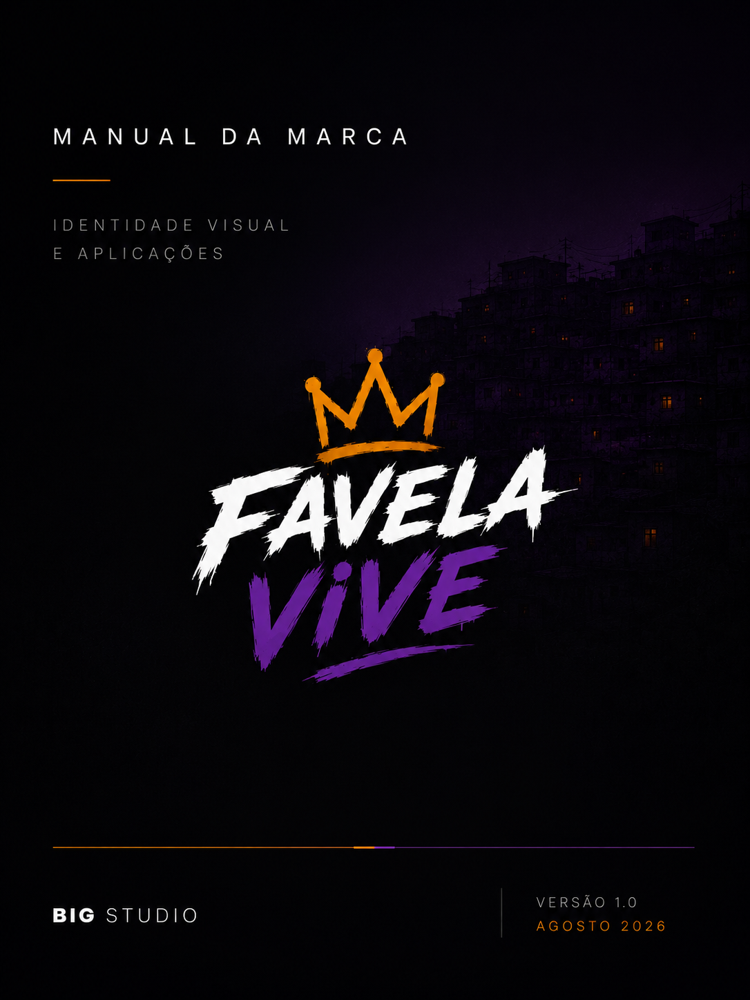

Cidades não começam no mapa. Começam na base.
Criamos projetos para FiveM onde identidade, sistemas e experiência são construídos como partes do mesmo universo.
PROJETOS
Favela Vive Roleplay
Uma cidade construída de dentro para fora.
Projeto autoral da BIG STUDIO para FiveM/Roleplay. Sistemas próprios, identidade própria e desenvolvimento contínuo formam a base de uma cidade pensada para evoluir sem depender de atalhos.
- Autenticidade
- Comunidade
- Respeito
- Evolução
Não é só cenário.
A experiência começa antes de o jogador entrar na cidade.
- 01Fundação
- 02Sistemas
- 03Experiência
Em construção.
Esta parte do site está sendo montada: bases com tema próprio, addons e scripts, prontos ou sob encomenda. Enquanto ela não fica pronta, o orçamento sai pela conversa — do mesmo jeito e sem fila.